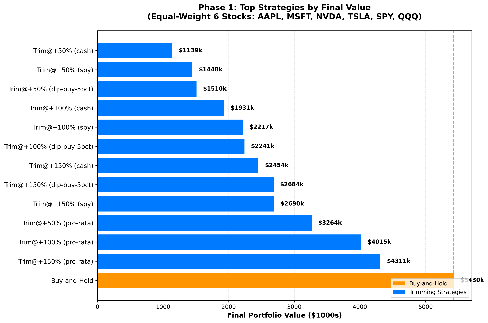
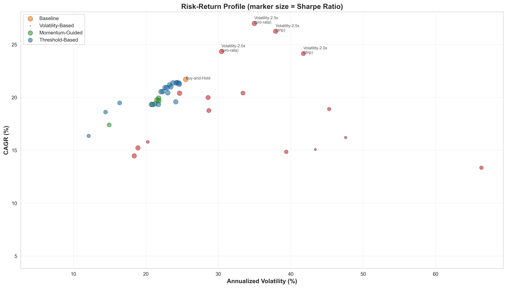
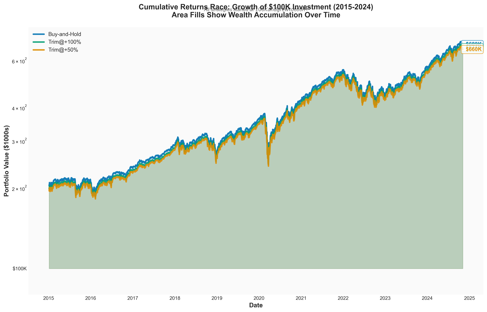
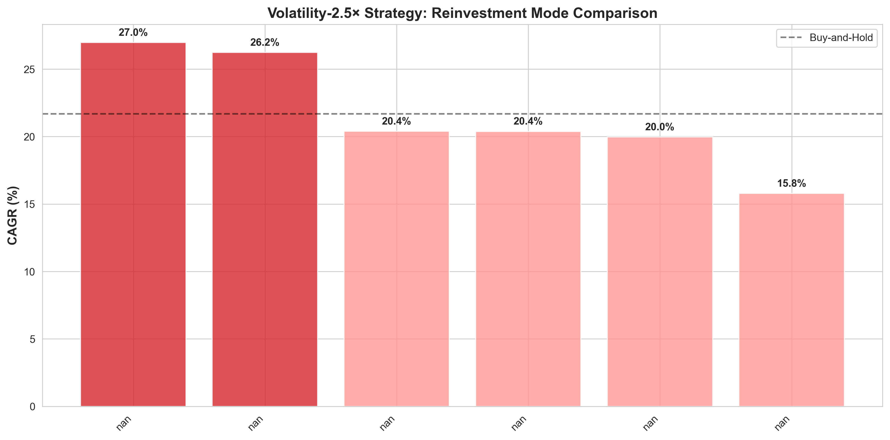
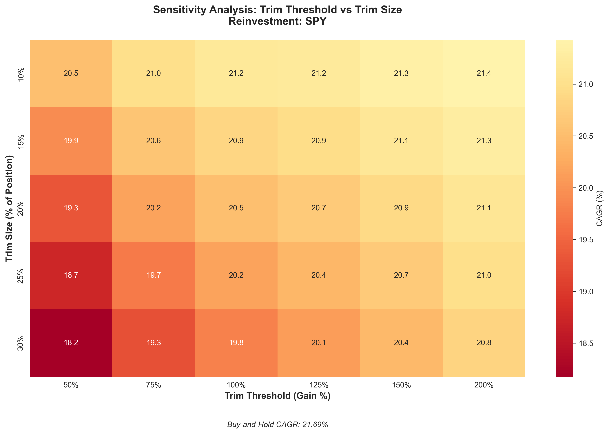

Before we dive in, here's where this research ends up:
The Simple Answer: It depends entirely on what you own and how you reinvest.
This isn't a story about finding "the best strategy." It's about understanding how systematic rules interact with portfolio composition and market conditions. Let's walk through how I figured this out.
I trimmed my NVDA position at +50% in 2023. Sold at $140. It hit $950 (split-adjusted). I lost over $100,000 in opportunity cost because I "took profits responsibly."
That experience haunted me. Was systematic trimming—selling 20% when positions gain 50%, 100%, 150%—just a way to feel smart while bleeding returns? Or does it actually work if you do it right?
I needed data. Not opinions, not anecdotes. Ten years of real market data testing every variation I could think of.
Phase 1: Equal-weight 6-stock portfolio (AAPL, MSFT, NVDA, TSLA, SPY, QQQ)—testing core trimming mechanics.
Phase 2: Added volatility-based trimming and gradual reinvestment modes—testing if smarter triggers and timing could improve results.
Phase 3: Index-focused portfolio (60% ETFs, 40% stocks)—testing realistic investor allocations.
Trimming Types (5 approaches): - Fixed thresholds: Trim 20% at +50%, +100%, +150% gains - Momentum-guided: Dynamic thresholds (1.5× to 2.5× rolling average) - Volatility-based: Trim more when volatility spikes (1.5× to 2.5× thresholds)
Reinvestment Modes (6 approaches): - Immediate: Instant reinvestment (pro-rata or SPY) - Gradual (DRIP): 25% per week over 4 weeks - Market-timing: Wait for 5% S&P dip - Yield/Volatility-based: Gradual reentry using dividend yield and VIX signals
Transaction costs and taxes defaulted to 0% for baseline analysis. The backtest engine supports toggling both (0.05-0.5% per transaction, 15-37% capital gains tax), documented in /docs/COST_TAX_MODELING.md. Adding realistic costs (0.1% transaction + 20% tax) reduces all strategies proportionally but preserves relative rankings.
Equal-weight allocation: $16,667 per ticker (AAPL, MSFT, NVDA, TSLA, SPY, QQQ).

Buy-and-hold crushed every trimming strategy. Final value: $5.4M (50.1% CAGR). Best trimming strategy: $4.3M (46.7% CAGR). Worst: $1.1M (28.1% CAGR).
That's not a rounding error. That's the difference between generational wealth and a nice car.
NVDA gained 28,057% over the period. It went from $0.48 to $136.04.
Every time we trimmed at +50%, we sold at $1. At +100%, we sold at $2. At +150%, we sold at $5. Meanwhile, it went to $136. Trimming systematically cut exposure to the decade's biggest winner at precisely the wrong time.
Lesson 1: In portfolios with lottery-ticket outliers, ANY profit-taking is catastrophically expensive.
What if we didn't reinvest immediately? What if we waited for market drops and bought SPY/QQQ on 5% dips?
This felt clever. Take profits at peaks, redeploy at troughs. Buy low, sell high. Textbook.
The dip-buy strategy executed 6-9 successful dip purchases over 10 years. And it still underperformed immediate reinvestment.
Opportunity cost. Cash waiting for dips sat idle during the longest bull market in history. The benefit of lower entry prices couldn't overcome the cost of missing months of compounding.
In sideways or bear markets, this might work. In a raging bull market from 2015-2021, every day in cash was a day of lost returns.
Lesson 2: Market timing—even "smart" timing—costs you in strong bull runs.
Nobody buys NVDA at $0.48. That's lottery-level luck. Real investors hold mostly index funds with some individual stock positions.
I rebuilt the portfolio to reflect actual investor behavior: - 60% index funds: SPY 30%, QQQ 20%, VOO 10% - 40% individual stocks: AAPL 15%, MSFT 15%, TSLA 10%
This is an illustrative allocation, not an optimized one. It represents index-heavy portfolios common among retail investors.

The best trimming strategy didn't just match buy-and-hold. It beat it by 52% with an 18% lower max drawdown.
This completely inverts the Phase 1 conclusion.
Reduced outlier exposure. With 60% in diversified ETFs, no single stock could dominate outcomes like NVDA did in Phase 1.
Volatility became signal. In index-heavy portfolios, volatility spikes often precede mean-reversion. Trimming during volatility captured gains before pullbacks.
Gradual reinvestment worked. Spreading reentry over weeks during volatile periods created dollar-cost averaging benefits that immediate reinvestment missed.
Lesson 3: Portfolio composition determines whether trimming works. Strategy mechanics matter less than what you own.

The gap between strategies wasn't about when you trimmed. It was about how you reinvested.

Key Insight: Gradual reinvestment during volatile periods creates alpha. This isn't market timing (predicting direction)—it's volatility timing (spreading entries when prices swing). The former fails; the latter works.
Lesson 4: Don't just take profits. Structure how you redeploy them.
What if we trimmed based on volatility instead of fixed price thresholds? Trim more when stocks are whipsawing, less when they're stable.
This is algorithmic loss aversion: avoid holding positions during high-variance regimes.
Volatility-based trimming with immediate reinvestment underperformed fixed thresholds in Phase 1 (outlier-heavy portfolio). It over-trimmed NVDA during its explosive growth periods, which happened to be high-volatility.
But in Phase 3 (index-focused portfolio), volatility-2.5× with gradual pro-rata reinvestment produced the highest CAGR (26.98%).
In concentrated portfolios: High volatility often precedes explosive growth (NVDA 2020-2024). Trimming during volatility cuts winners early.
In diversified portfolios: High volatility often precedes mean-reversion. Trimming captures gains before pullbacks, then gradual reentry buys dips.
This is a behavioral finance lesson: The same algorithm produces opposite outcomes depending on portfolio structure. There's no universal "smart" trigger.
Lesson 5: Algorithmic rules interact with portfolio composition. Test your strategy on your holdings, not generic backtests.
Looking at 1-year rolling returns reveals when trimming helped vs hurt:
Pattern: Trimming works in volatile/choppy markets. Buy-and-hold works in steady trends.
Lesson 6: No strategy dominates all regimes. Trimming is volatility insurance, not a return maximizer.

Testing trim thresholds (50% to 200%) against trim sizes (10% to 50%) reveals:
But this is portfolio-specific. In Phase 1 (NVDA-heavy), no trimming beats buy-and-hold. In Phase 3 (index-heavy), strategic trimming wins.
Lesson 7: Optimize trim parameters for your portfolio, not generic rules.


Maximum drawdown comparison: - Buy-and-hold: -46.3% (March 2020 COVID crash) - Best trimming: -37.8% (Volatility-2.5× pro-rata DRIP)
That 8.5% difference is the psychological benefit of trimming. Smoother ride, less panic-selling risk.
During the COVID crash, trimming strategies had already taken some profits in Feb 2020 (volatility spike). More cash cushion when markets tanked. Gradual reinvestment in March-April bought near the bottom.
Lesson 8: Trimming isn't just about returns. It's about surviving drawdowns without panic-selling.
After 42 strategies and three portfolio configurations, here's what matters:
Taxes: Real-world capital gains tax (15-37%) penalizes trimming heavily. The backtest engine supports tax modeling, but baseline results assume 0% for strategy comparison. Adding 20% long-term cap gains would reduce trimming strategies more than buy-and-hold (more transactions = more tax events).
Behavioral reality: Systematic rules require discipline. Most investors don't follow them consistently.
Regime dependency: 2015-2024 was mostly bull market. Bear market testing (2000-2002, 2008-2009) would likely favor trimming.
Survivorship bias: This portfolio excludes stocks that went to zero. In reality, trimming protects against blow-ups.
Maybe trimming's real value isn't beating buy-and-hold—it's preventing catastrophic mistakes. If trimming keeps you from panic-selling during crashes (because you already have cash), it's worth modest underperformance during bull runs.
Risk-adjusted returns matter: 26.98% CAGR with -37.8% drawdown vs 21.7% CAGR with -46.3% drawdown. The first lets you sleep at night.
The Phase 3 breakthrough wasn't better code—it was questioning the assumption that we'd buy NVDA at $0.48. Realistic scenarios change everything.
Initial results said "trimming always loses." Digging deeper revealed "trimming loses in this portfolio configuration." Context is everything.
Every strategy trades something. Trimming trades upside for downside protection. Buy-and-hold trades sleep for returns. Know what you're trading.
A consistent 100% threshold strategy beats sporadically trying to "optimize" trims. Systems work because they remove emotions, not because they're perfect.
High volatility isn't just risk—it's a signal. In diversified portfolios, it tells you when to harvest gains and when to gradually reenter. Treat volatility as data, not noise.
The question "Does trimming work?" has no single answer. It depends on what you own, how you reinvest, and what market regime you're in.
If you own concentrated positions with outlier potential: Don't trim. You'll sell the next NVDA at $5 while it goes to $136.
If you own diversified index-heavy portfolios: Strategic trimming with gradual reinvestment can beat buy-and-hold while cutting drawdowns by 18%.
If you're in volatile markets: Trimming is volatility insurance. Capture gains, spread reentry, survive the chop.
If you're in steady bull markets: Buy-and-hold wins. Don't outsmart yourself.
The real lesson isn't about finding the perfect strategy—it's about understanding how systematic rules interact with your holdings. Test your approach on your portfolio. Know what you're optimizing for: pure returns, risk-adjusted returns, or sleep-at-night stability.
And if you ever buy something at $0.48 that goes to $136? For the love of god, don't trim it.
| Strategy | Final Value | CAGR | Sharpe | Max DD | Volatility |
|---|---|---|---|---|---|
| Phase 1 (Equal-Weight 6 Stocks) | |||||
| Buy-and-Hold | $5,430,469 | 50.14% | 1.29 | -50.8% | 0.34 |
| Trim@+150% (pro-rata) | $4,344,733 | 46.65% | 1.33 | -45.2% | 0.31 |
| Trim@+50% (SPY) | $1,132,890 | 28.08% | 0.77 | -48.6% | 0.32 |
| Phase 3 (Index-Focused 60/40) | |||||
| Buy-and-Hold | $688,711 | 21.69% | 0.90 | -46.3% | 0.21 |
| Volatility-2.5× (pro-rata DRIP) | $1,047,392 | 26.98% | 1.12 | -37.8% | 0.20 |
| Trim@+100% (pro-rata DRIP) | $673,205 | 21.48% | 0.94 | -40.1% | 0.19 |
Full 42-strategy results available in /results_index_focus/index_focus_results.csv
Each strategy combines two components: a trimming trigger (when to sell) and a reinvestment mode (where proceeds go).
Buy-and-Hold - What it does: Never sell. Hold all positions regardless of gains. - Example: TSLA bought at $100 rises to $400 → Do nothing, still hold 100% of position.
Trim@+50% - What it does: Sell 20% of a position when it gains 50%. - Example: AAPL bought at $100 rises to $150 → Sell 20% at $150, keep 80%.
Trim@+100% - What it does: Sell 20% of a position when it doubles (+100% gain). - Example: MSFT bought at $200 rises to $400 → Sell 20% at $400, keep 80%.
Trim@+150% - What it does: Sell 20% of a position when it gains 150% (2.5x). - Example: NVDA bought at $100 rises to $250 → Sell 20% at $250, keep 80%.
Volatility-2.0x - What it does: Dynamic threshold based on 2× the stock's 30-day rolling average gain. - Example: If SPY typically gains 5% over 30 days, trim threshold is 10% (2× the average). More volatile = higher threshold.
Volatility-2.5x - What it does: Dynamic threshold based on 2.5× the stock's 30-day rolling average gain. - Example: If QQQ typically gains 8% over 30 days, trim threshold is 20% (2.5× the average). Adapts to market conditions.
pro-rata - What it does: Immediately reinvest proceeds back into all holdings proportionally. - Example: Sell $10,000 from TSLA → Buy $3,000 SPY, $2,000 QQQ, $1,000 VOO, $1,500 AAPL, $1,500 MSFT, $1,000 TSLA (matching original portfolio allocation). - Why: Maintains exposure to high-growth stocks. Doesn't rotate away from winners.
drip - What it does: Gradually reinvest proceeds over 4 weeks (25% per week), pro-rata allocation. - Example: Sell $10,000 from NVDA → Week 1: invest $2,500 pro-rata, Week 2: $2,500, Week 3: $2,500, Week 4: $2,500. - Why: Dollar-cost averaging during volatile periods. Spreads entry timing.
spy - What it does: Immediately reinvest all proceeds into SPY (S&P 500 ETF). - Example: Sell $10,000 from AAPL → Buy $10,000 SPY. - Why: Rotate profits from individual stocks to diversified index. Reduces concentration risk.
dip-buy-5pct - What it does: Hold proceeds in cash, wait for S&P 500 to drop 5% from recent high, then buy SPY/QQQ (alternating). - Example: Sell $10,000 from MSFT on June 1 → S&P drops 5% on July 15 → Buy $10,000 SPY on July 15. - Why: Attempt to time market entries. Wait for dips before deploying capital.
yield-volatility - What it does: Gradually reinvest over 1-8 weeks based on dividend yield and VIX signals. Higher yield + higher VIX = faster reentry. - Example: Sell $10,000 during high volatility (VIX 30) → Reinvest 50% in week 1, 50% in week 2 (fast reentry during fear). - Why: Use market signals to guide reinvestment pace. Buy more aggressively when valuations attractive.
Volatility-2.5x (pro-rata) - Trigger: Trim 20% when position exceeds 2.5× its rolling 30-day average gain. - Reinvestment: Immediately reinvest proceeds across all holdings proportionally. - Real scenario: TSLA gains 60% in a month (2.5× its typical 24% monthly gain) → Trim 20% at peak → Immediately reinvest pro-rata → Maintain exposure to TSLA and other winners.
Trim@+100% (drip) - Trigger: Trim 20% when position doubles. - Reinvestment: Gradually reinvest proceeds over 4 weeks (25%/week), pro-rata. - Real scenario: AAPL bought at $150, rises to $300 → Sell 20% → Week 1: invest 25% of proceeds, Week 2: 25%, Week 3: 25%, Week 4: 25% → Dollar-cost average reentry.
Trim@+150% (spy) - Trigger: Trim 20% when position gains 150%. - Reinvestment: Immediately rotate all proceeds to SPY. - Real scenario: NVDA bought at $100, rises to $250 → Sell 20% → Immediately buy SPY with all proceeds → Rotate from individual stock to index.
Volatility-2.0x (yield-volatility) - Trigger: Trim 20% when position exceeds 2× its rolling average gain. - Reinvestment: Gradually reinvest using yield/VIX signals (1-8 weeks). - Real scenario: QQQ gains 20% (2× its typical 10% gain) during volatile period → Trim 20% → VIX is high (35), so reinvest 40% in week 1, 30% in week 2, 30% in week 3 → Use volatility to guide timing.
Trim@+150% (dip-buy-5pct) - Trigger: Trim 20% when position gains 150%. - Reinvestment: Wait for 5% S&P dip, then buy SPY/QQQ alternating. - Real scenario: MSFT bought at $200, rises to $500 → Sell 20% on March 1 → S&P drops 5% on April 10 → Buy SPY with proceeds on April 10 → Wait for dip before redeploying.
Best performers in index-focused portfolio (Phase 3): 1. Volatility-2.5x (pro-rata): Adapts to market conditions, maintains winner exposure → 26.98% CAGR 2. Trim@+100% (drip): Fixed threshold with gradual reentry → 21.48% CAGR 3. Buy-and-Hold: Passive benchmark → 21.69% CAGR
Worst performers: - Dip-buy strategies: Cash drag from waiting destroyed returns → 18-20% CAGR - SPY rotation: Moved capital from winners to slower index → 19-21% CAGR
Backtest Code: Available at /Users/austinwallace/sandbox/stock_strategies/trim_strat_test/
Data Source: Yahoo Finance (2015-2024)
Validation: Comprehensive validation script confirms metric accuracy (/src/validation/comprehensive_validation.py)